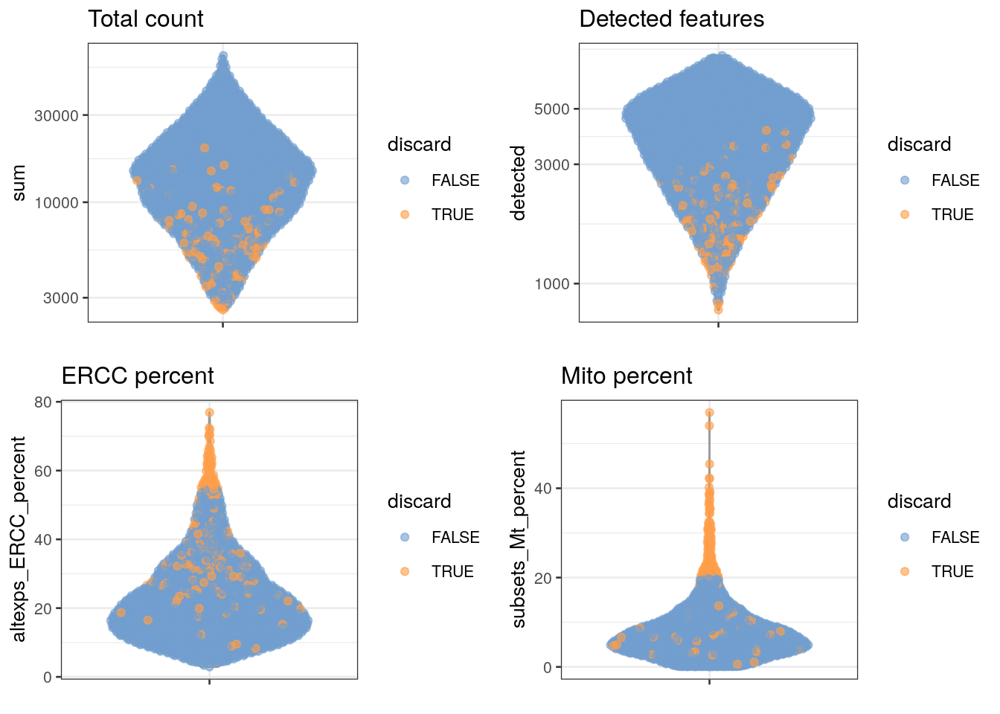

Chapter 2 Quality control of the library
Laboratory and technical difficulties during the scRNA-seq data generation can result in poor quality libraries. Before any analysis can be run, the data itself must be checked and cleaned. If these low quality samples are not removed from the data, they can cause issues in the downstream analysis.
2.1 Visualizing distributions of diagnostic metrics and identifying low-quality cells
There are several common measures researchers use to determine sample quality in scRNA-seq:
library size, the total sum of counts across all relevant features (in this case, genes) for each cell. A small library size indicates the RNA has been lost at some point during the library preparation.
number of expressed features per cell, the number of genes with non-zero counts. Few expressed genes suggests the transcript population was not successfully captured during the library prep.
proportion of reads mapped to mitochondrial genes relative to total count across all features. A high proportion suggests cytoplasmic RNA was lost from cells due to perforation of the cell membrane. These holes are large enough to let individual transcripts to escape but too small for mitochondria to escape, leading to the library being enriched for mitochondrial genes.
Some experiments will use other metrics for quality control, such as RNA spike-ins (RNA transcripts of known sequence and quantity). In these experiments, researchers may choose to use proportion of spike-in reads relative to total counts as a QC (quality control) metric. This proportion should be similar across all samples, so any enrichment of the spike-in indicates a poor-quality sample. The Zeisel brain dataset does include spike-ins (s standardized control mix, labeled ‘ERCC’ [for the External RNA Controls Consortium, which sets standards]), so we will use this metric.
It is always a good idea to plot any metrics you’re using as indicators of sample quality as the first step.
The easiest way to identify low-quality cells is to set a quality threshold and remove any samples that fail to reach it. Some researchers use fixed thresholds, although this approach requires prior knowledge and experience to know what appropriate thresholds might be. We instead can define thresholds based on deviation from the median value of each metric. This approach assumes most of the samples in a dataset are high-quality. Deviation in this case is defined as the median absolute deviation (MAD). Samples are considered outliers if any of the following are true:
- library size < 3 MADs from the median
- number of expressed reads < 3 MADs from the median
- proportion of mitochondrial reads > 3 MADs from the median
(If your dataset uses spike-ins, treat the proportion of spike-ins similar to the proportion of mitochondrial reads.)
library(scater)
# identifying low-quality cells
stats <- perCellQCMetrics(sce.zeisel, subsets = list(Mt = rowData(sce.zeisel)$featureType == "mito"))
qc <- quickPerCellQC(stats, percent_subsets = c("altexps_ERCC_percent",
"subsets_Mt_percent"))
# final sample size of samples failing QC
colSums(as.matrix(qc))## low_lib_size low_n_features high_altexps_ERCC_percent
## 0 3 65
## high_subsets_Mt_percent discard
## 128 189It would also be informative to see where the samples that failed QC (quality control) fall in the distributions of all of our quality markers.
# visualizing low-quality cells in distributions
unfiltered <- sce.zeisel # we'll keep a copy of the unfiltered data, so we can see where on the distributions the eliminated samples lie
colData(unfiltered) <- cbind(colData(unfiltered), stats)
unfiltered$discard <- qc$discard # this gives us a list of the samples that have failed QC
# plotting the distributions, coloring the samples that will be removed in orange
gridExtra::grid.arrange(
plotColData(unfiltered, y = "sum", colour_by = "discard") +
scale_y_log10() + ggtitle("Total count"),
plotColData(unfiltered, y = "detected", colour_by = "discard") +
scale_y_log10() + ggtitle("Detected features"),
plotColData(unfiltered, y = "altexps_ERCC_percent",
colour_by = "discard") + ggtitle("ERCC percent"),
plotColData(unfiltered, y = "subsets_Mt_percent",
colour_by = "discard") + ggtitle("Mito percent"),
ncol=2
)
2.2 Identifying and removing low-quality cells
After you have identified the low-quality cells, you can easily remove them in R.
# creating a dataset with only the samples that pass QC
sce.zeisel.qc <- sce.zeisel[,!qc$discard]QUESTIONS
How many samples did you remove as suspected low-quality cells?
Do all the quality metrics (total count, number of expressed features, percentage of mitochondrial reads, and percentage of ERCC reads) agree when it comes to identifying low-quality samples?
Which metric resulted in the removal of the greatest number of samples?
Some researchers mark the suspected low-quality cells instead of removing them from the analysis. Ideally, the low-quality cells form their own cluster that can be ignored when interpreting the scRNA-seq results. This approach prevents the researcher from discarding cells or cell types that represent a true biological state and happen to have poor QC metrics.